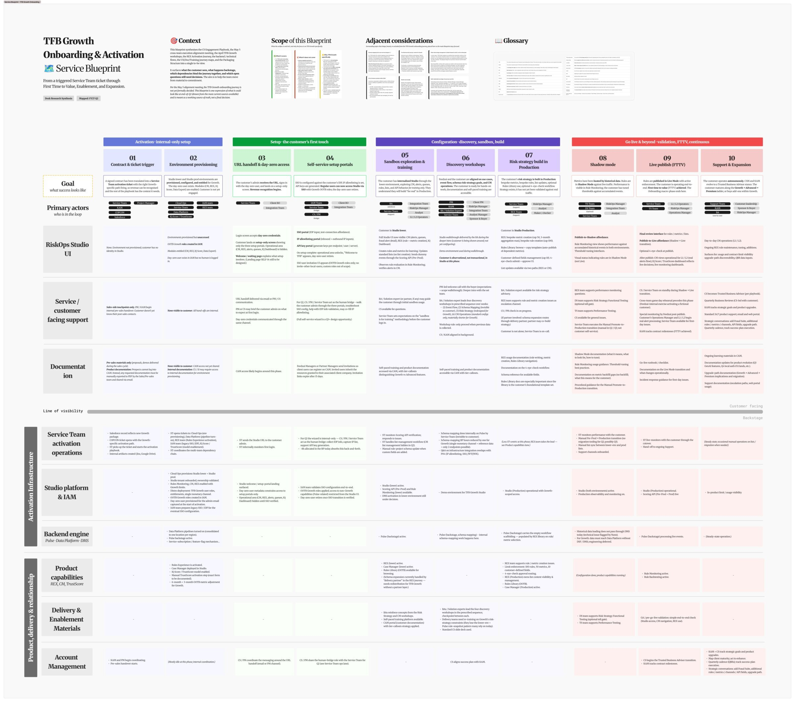
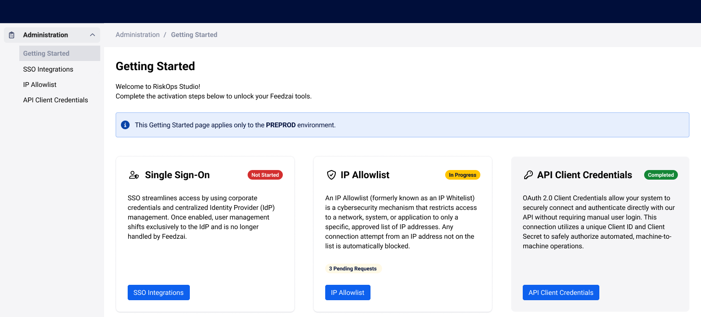
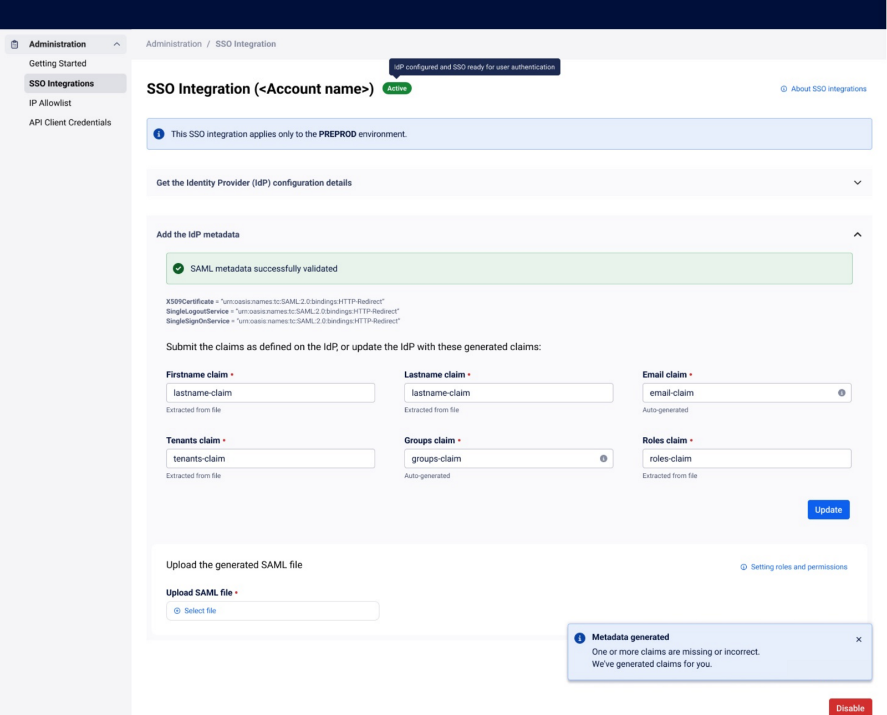
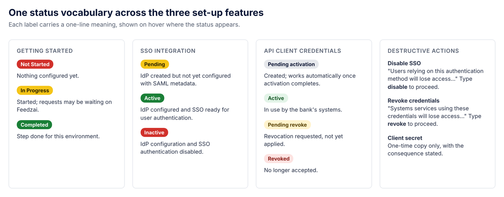

Feedzai RiskOps Studio
Self-service onboarding and activation journeys
Guiding new clients to set up Feedzai's Transaction Fraud for Banking solution, through a new self-service onboarding and activation journey.
Context & Contribution
Feedzai builds fraud and anti-money-laundering software for banks. RiskOps Studio is its unified platform, gradually replacing the separate Fraud, AML and Identity applications. In 2026 Feedzai was preparing TFB Growth, a new offering of Transaction Fraud for Banking that new clients would set up through self-service, due by the end of Q2. I joined on a contract, from February to July 2026, as the main designer for onboarding and activation. My contribution as Senior Product Designer:
- Helped researchers and product managers turn seven onboarding documents into one service blueprint
- Led the design of the three set-up features a new client meets: SSO, IP allowlist and API client credentials
- Designed the Getting Started page that ties the three together
- Partnered with product managers and engineering on scope and specs, written in Kiro, a spec-driven AI tool, from design-system components
Problem & Opportunity
Onboarding and activation, the stretch between a signed contract and a client actually using the product, was known for its friction. Setting up access and integrations meant emails, calls and hand-offs between teams, and it could take days, or even weeks when partners were involved, before a client saw any value.
The opportunity was to make as much of that set-up as possible self-service, starting with TFB Growth. But to know what to automate first, we needed to understand what really happened in this phase, and what was known was scattered:
- Scattered knowledge: onboarding was split across ten teams and seven documents that didn't always agree.
- Manual set-up: customer success, project managers and the service team collected identity-provider details, IP lists and API key requests by hand.
- A fixed date: TFB Growth had to launch by the end of Q2, so scope had to be one the team could commit to.
Discovery & Key Insights
The challenge: one journey, many owners
Onboarding a new client touches ten Feedzai teams and up to seven roles at the client: from sales, project management, customer success and the service team on one side, to the client's IT, security and fraud teams on the other. What each team knew lived in seven documents, such as sales hand-overs, project plans, implementation guides and support runbooks. They were written at different times, for different readers, and they didn't always agree.
A journey map would have shown the client's experience but hidden the work behind it, and that hidden work was exactly where those days and weeks went. A service blueprint shows both at once: what the client sees and does, the people and systems behind each step, and every hand-off between them. That made it the right tool to decide what self-service should take over first, and to give every team the same picture to decide from.
One service blueprint
The blueprint maps onboarding in 10 stages and 4 phases, from contract to support and expansion, with scope, open topics and a shared glossary.

How we built it
- Extract: I used AI to pull steps, actors, systems and open questions out of each of the seven sources into one table, with every item traced back to its source.
- Verify: we checked each item against the original and in short review sessions with the team that owned it, logging conflicts instead of picking a side.
- Fill the gaps: interviews with customer success, project managers and the service team, and walkthroughs of recent onboardings (email threads, calls and support tickets) showed what actually happens, not only what the documents said.
- Align: working sessions with researchers, product managers and team leads agreed the stages and marked the open questions that needed a decision.
Key Insights
- Getting started meant three set-up steps: before a new client could use the product, it needed SSO, an IP allowlist and API client credentials in place, so the first page had to bring all three together.
- The wrong environment is easy to configure: each environment needs its own setup.
- Set-up errors were found late, by support: problems with SSO files only surfaced in tickets.
Design & Delivery
Getting Started
One page brings the three set-up steps together, each with its status, under the environment's name, so an admin knows what to do first without a call.

SSO that checks itself
SSO shows the values the identity provider needs, then checks the SAML file as it is uploaded: each claim found or missing, and missing ones generated to copy back. Errors are fixed at upload, not in a ticket.

One status vocabulary
All three features share the same status labels, so learning one teaches the others. A guided wizard was logged for Q3, so the team could commit to a Q2 date it could meet.

Achievements & Impact
into one service blueprint
(SSO, IP allowlist, API credentials)
activation time
Key Takeaways
A company's own documents are research data
AI made it fast enough to extract everything from seven sources, and checking each item with its owner made the blueprint something every team trusted.
Service blueprints show where the work really is
Putting the client's steps and the hidden work behind them on one page turned opinions into decisions: it showed which manual steps self-service should replace first, and what could wait for a later release.
Get in touch if you want a deeper dive or to discuss how my skills and expertise can
help on your challenges.
More about me on LinkedIn. Let's connect!